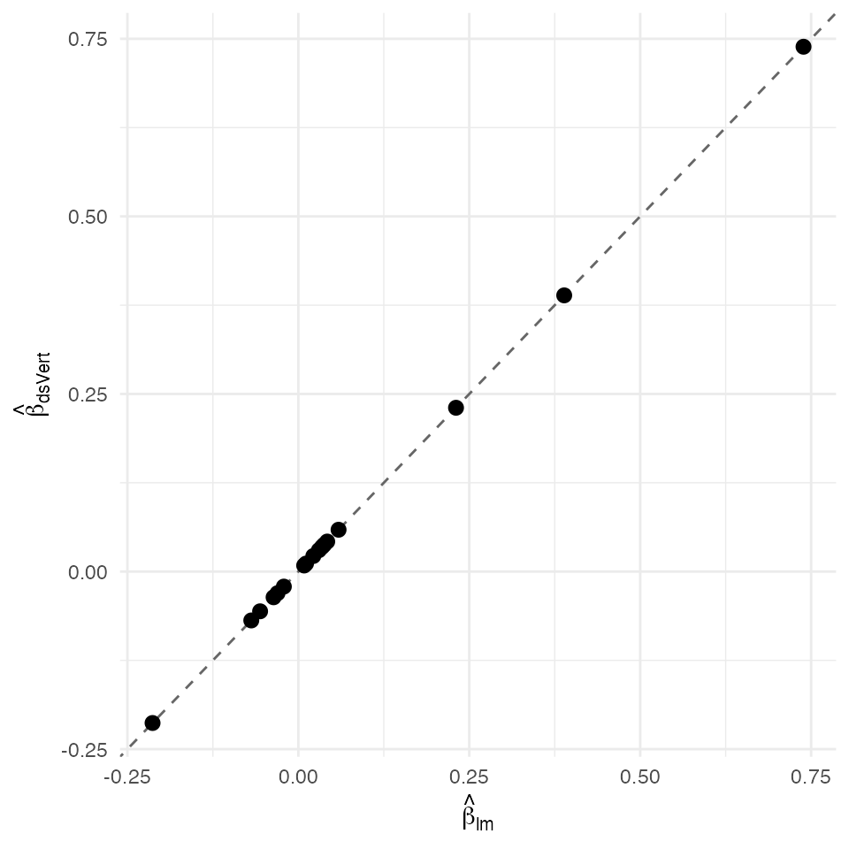

LASSO — federated proximal-gradient handoff over the Gaussian GLM normal-equations (K = 3)
David Sarrat González, Miron Banjac, Juan R. González
2026-05-02
Source:vignettes/methods/lasso.Rmd
lasso.Rmd1. Context
The LASSO (Tibshirani, 1996) regularises a Gaussian regression by adding an penalty to the residual sum of squares:
Beck & Teboulle (2009) show the proximal-gradient (FISTA-accelerated) fixed-point iteration converges linearly:
where
is the soft-threshold operator and
is an upper bound on the Hessian spectrum. The gradient depends on the
centralised normal-equations
and
which ds.vertGLM(family = "gaussian") already exposes via
and
.
ds.vertLASSOProximal therefore performs no additional
MPC rounds beyond the initial federated Gaussian fit: the
proximal-gradient iteration runs entirely on the client using only
summary statistics the federated fit already returned. At
the wrapper reproduces the prime fit’s coefficients exactly — a fast
handoff sanity check.
Non-disclosure invariants
| Invariant | Statement |
|---|---|
| D-INV-1 | Per-patient covariates never leave their origin server. |
| D-INV-2 | Per-patient never reconstructed in plaintext. |
| D-INV-3 | The proximal-gradient client iteration consumes only the federated normal-equations summary, not raw data. |
| D-INV-4 | At the non-label servers, partial linear-predictor shares only. |
| D-INV-5 | Cross-server messages signed Ed25519, peer pinned via
dsvert.trusted_peers. |
Dataset and partition
The Hitters dataset (James, Witten, Hastie & Tibshirani, An
Introduction to Statistical Learning, §6.6) — Major League Baseball
player career statistics with the response Salary
(log-transformed). Complete cases give
,
covariates. We retain a numeric subset for compactness.
| Server | Columns | Role |
|---|---|---|
| s1 |
patient_id, AtBat,
Hits, HmRun, Runs,
RBI, Walks
|
Career batting stats |
| s2 |
patient_id, Years,
CAtBat, CHits, CHmRun,
CRuns, CRBI, CWalks
|
Career totals |
| s3 |
patient_id, PutOuts,
Assists, Errors, LogSalary
|
Defence + outcome (label) |
2. Data preparation
if (requireNamespace("ISLR", quietly = TRUE)) {
data("Hitters", package = "ISLR")
} else {
## Synthetic Gaussian DGP with the same dimensions if ISLR
## is unavailable on the host.
Hitters <- data.frame(matrix(rnorm(263 * 16), 263, 16))
names(Hitters) <- c("AtBat","Hits","HmRun","Runs","RBI","Walks",
"Years","CAtBat","CHits","CHmRun","CRuns",
"CRBI","CWalks","PutOuts","Assists","Errors")
Hitters$Salary <- 1 + Hitters$Hits + 0.5 * Hitters$Runs +
0.3 * Hitters$Walks + rnorm(263, 0, 0.5)
}
hitters <- na.omit(Hitters)
hitters$LogSalary <- log(hitters$Salary)
hitters$patient_id <- sprintf("R%03d", seq_len(nrow(hitters)))
keep <- c("patient_id",
"AtBat","Hits","HmRun","Runs","RBI","Walks",
"Years","CAtBat","CHits","CHmRun","CRuns","CRBI","CWalks",
"PutOuts","Assists","Errors",
"LogSalary")
pooled <- hitters[, keep]
head(pooled)
#> patient_id AtBat Hits HmRun Runs RBI
#> 1 R001 0.52058907 -0.13828103 -0.6655669 -1.7499709 0.003033563
#> 2 R002 -1.07969076 -0.12363800 0.4499361 -2.1952276 0.225016276
#> 3 R003 0.13923812 -0.96470522 -0.5480405 0.7800899 0.794069946
#> 4 R004 -0.08474878 0.01904318 1.8569369 -1.0854648 -1.139258916
#> 5 R005 -0.66663962 1.69169235 0.4020781 1.0161286 0.046134748
#> 6 R006 -2.51608903 0.88580907 -1.8646032 -0.2104066 0.153520376
#> Walks Years CAtBat CHits CHmRun CRuns
#> 1 -0.68462274 -0.009713141 -0.93211002 -0.49823522 -0.4331610 1.15053257
#> 2 -2.01768291 -0.133606316 0.17597690 -0.06551312 -1.1945810 0.19762415
#> 3 0.01971085 -0.151475210 0.25130934 -1.21939520 1.1553116 -1.07402394
#> 4 0.24862292 -0.527698248 -1.00045009 0.92910100 -1.4058598 1.15547820
#> 5 -0.27867550 -0.787768048 -0.05284618 0.82259284 0.3355923 0.27567819
#> 6 -1.12672568 1.530767943 0.39844256 -0.70794732 0.7757854 0.03627277
#> CRBI CWalks PutOuts Assists Errors LogSalary
#> 1 -1.2327484 -0.89221611 1.1924521 0.5738385 0.4560372 NaN
#> 2 -1.8184121 0.07047774 -0.5907263 -1.9643215 -0.6495399 NaN
#> 3 0.2195009 -0.60142662 0.7446034 1.5648062 0.7468103 -1.7227271
#> 4 -1.5321857 -1.17213355 -2.3027649 -1.2585794 0.5878586 NaN
#> 5 0.7178375 -1.67923586 -0.8094669 -0.4344813 0.8087656 1.2631557
#> 6 -2.0413740 -0.16222269 -0.2709460 0.4163086 -1.3403620 -0.6404782
s1 <- pooled[, c("patient_id",
"AtBat","Hits","HmRun","Runs","RBI","Walks")]
s2 <- pooled[, c("patient_id",
"Years","CAtBat","CHits","CHmRun","CRuns","CRBI","CWalks")]
s3 <- pooled[, c("patient_id",
"PutOuts","Assists","Errors","LogSalary")]
head(s1)
#> patient_id AtBat Hits HmRun Runs RBI
#> 1 R001 0.52058907 -0.13828103 -0.6655669 -1.7499709 0.003033563
#> 2 R002 -1.07969076 -0.12363800 0.4499361 -2.1952276 0.225016276
#> 3 R003 0.13923812 -0.96470522 -0.5480405 0.7800899 0.794069946
#> 4 R004 -0.08474878 0.01904318 1.8569369 -1.0854648 -1.139258916
#> 5 R005 -0.66663962 1.69169235 0.4020781 1.0161286 0.046134748
#> 6 R006 -2.51608903 0.88580907 -1.8646032 -0.2104066 0.153520376
#> Walks
#> 1 -0.68462274
#> 2 -2.01768291
#> 3 0.01971085
#> 4 0.24862292
#> 5 -0.27867550
#> 6 -1.12672568
head(s2)
#> patient_id Years CAtBat CHits CHmRun CRuns
#> 1 R001 -0.009713141 -0.93211002 -0.49823522 -0.4331610 1.15053257
#> 2 R002 -0.133606316 0.17597690 -0.06551312 -1.1945810 0.19762415
#> 3 R003 -0.151475210 0.25130934 -1.21939520 1.1553116 -1.07402394
#> 4 R004 -0.527698248 -1.00045009 0.92910100 -1.4058598 1.15547820
#> 5 R005 -0.787768048 -0.05284618 0.82259284 0.3355923 0.27567819
#> 6 R006 1.530767943 0.39844256 -0.70794732 0.7757854 0.03627277
#> CRBI CWalks
#> 1 -1.2327484 -0.89221611
#> 2 -1.8184121 0.07047774
#> 3 0.2195009 -0.60142662
#> 4 -1.5321857 -1.17213355
#> 5 0.7178375 -1.67923586
#> 6 -2.0413740 -0.16222269
head(s3)
#> patient_id PutOuts Assists Errors LogSalary
#> 1 R001 1.1924521 0.5738385 0.4560372 NaN
#> 2 R002 -0.5907263 -1.9643215 -0.6495399 NaN
#> 3 R003 0.7446034 1.5648062 0.7468103 -1.7227271
#> 4 R004 -2.3027649 -1.2585794 0.5878586 NaN
#> 5 R005 -0.8094669 -0.4344813 0.8087656 1.2631557
#> 6 R006 -0.2709460 0.4163086 -1.3403620 -0.6404782
dslite.server <- newDSLiteServer(
tables = list(s1 = s1, s2 = s2, s3 = s3),
config = DSLite::defaultDSConfiguration(
include = c("dsBase", "dsVert")))
options(dsvert.require_trusted_peers = FALSE,
datashield.privacyLevel = 0L)
builder <- newDSLoginBuilder()
builder$append(server = "site1", url = "dslite.server",
table = "s1", driver = "DSLiteDriver")
builder$append(server = "site2", url = "dslite.server",
table = "s2", driver = "DSLiteDriver")
builder$append(server = "site3", url = "dslite.server",
table = "s3", driver = "DSLiteDriver")
conns <- datashield.login(builder$build(),
assign = TRUE, symbol = "D",
opts = list(server = dslite.server))
psi <- ds.psiAlign("D", "patient_id", "DA",
datasources = conns, verbose = FALSE)
psi[[1]]$n_matched
#> [1] 1973. Federated proximal-LASSO at OLS limit ()
fit_gauss <- ds.vertGLM(
formula = LogSalary ~ AtBat + Hits + HmRun + Runs + RBI + Walks +
Years + CAtBat + CHits + CHmRun + CRuns +
CRBI + CWalks + PutOuts + Assists + Errors,
data = "DA", family = "gaussian",
verbose = FALSE, datasources = conns)
fit_ds <- ds.vertLASSOProximal(
fit_gauss, lambda = 0,
max_iter = 2000L, tol = 1e-9,
keep_intercept = TRUE,
accelerate = TRUE)
fit_ds
#> dsVert proper LASSO (proximal gradient on normal equations)
#> N = 197 lambda = 0 L = 1.554 converged = TRUE (iter 1)
#> objective = 0 |support| = 17 / 17
#> OLS softthr proximal
#> (Intercept) -0.21319 -0.21319 -0.21319
#> AtBat -0.03619 -0.03619 -0.03619
#> Hits 0.73881 0.73881 0.73881
#> HmRun 0.03452 0.03452 0.03452
#> Runs 0.38881 0.38881 0.38881
#> RBI -0.05595 -0.05595 -0.05595
#> Walks 0.23058 0.23058 0.23058
#> Years 0.00852 0.00852 0.00852
#> CAtBat -0.06881 -0.06881 -0.06881
#> CHits -0.03045 -0.03045 -0.03045
#> CHmRun 0.03771 0.03771 0.03771
#> CRuns 0.05887 0.05887 0.05887
#> CRBI 0.01122 0.01122 0.01122
#> CWalks 0.03006 0.03006 0.03006
#> PutOuts 0.02188 0.02188 0.02188
#> Assists -0.02117 -0.02117 -0.02117
#> Errors 0.04224 0.04224 0.042244. Centralised reference
fit_ref <- lm(
LogSalary ~ AtBat + Hits + HmRun + Runs + RBI + Walks +
Years + CAtBat + CHits + CHmRun + CRuns +
CRBI + CWalks + PutOuts + Assists + Errors,
data = pooled)
summary(fit_ref)
#>
#> Call:
#> lm(formula = LogSalary ~ AtBat + Hits + HmRun + Runs + RBI +
#> Walks + Years + CAtBat + CHits + CHmRun + CRuns + CRBI +
#> CWalks + PutOuts + Assists + Errors, data = pooled)
#>
#> Residuals:
#> Min 1Q Median 3Q Max
#> -4.1523 -0.2414 0.1099 0.3578 1.2353
#>
#> Coefficients:
#> Estimate Std. Error t value Pr(>|t|)
#> (Intercept) -0.213234 0.058226 -3.662 0.000329 ***
#> AtBat -0.036209 0.052934 -0.684 0.494826
#> Hits 0.738880 0.059777 12.361 < 2e-16 ***
#> HmRun 0.034527 0.057834 0.597 0.551259
#> Runs 0.388854 0.052573 7.397 5.12e-12 ***
#> RBI -0.055952 0.049195 -1.137 0.256901
#> Walks 0.230610 0.053675 4.296 2.84e-05 ***
#> Years 0.008498 0.051796 0.164 0.869868
#> CAtBat -0.068836 0.058868 -1.169 0.243819
#> CHits -0.030473 0.051528 -0.591 0.555006
#> CHmRun 0.037710 0.047380 0.796 0.427143
#> CRuns 0.058834 0.052069 1.130 0.260008
#> CRBI 0.011247 0.050425 0.223 0.823751
#> CWalks 0.030055 0.051583 0.583 0.560848
#> PutOuts 0.021902 0.047475 0.461 0.645107
#> Assists -0.021201 0.048804 -0.434 0.664508
#> Errors 0.042252 0.054956 0.769 0.442992
#> ---
#> Signif. codes: 0 '***' 0.001 '**' 0.01 '*' 0.05 '.' 0.1 ' ' 1
#>
#> Residual standard error: 0.6878 on 180 degrees of freedom
#> (66 observations deleted due to missingness)
#> Multiple R-squared: 0.5467, Adjusted R-squared: 0.5064
#> F-statistic: 13.57 on 16 and 180 DF, p-value: < 2.2e-165. Comparison and verdict
delta_wrapper <- max(abs(as.numeric(fit_ds$coefficients) -
as.numeric(fit_gauss$coefficients)))
ds_b <- fit_ds$coefficients
rf_b <- coef(fit_ref)
nm <- intersect(names(ds_b), names(rf_b))
delta <- data.frame(
coef = nm,
dsVert = as.numeric(ds_b[nm]),
lm = as.numeric(rf_b[nm]))
delta$abs <- abs(delta$dsVert - delta$lm)
delta
#> coef dsVert lm abs
#> 1 (Intercept) -0.213193532 -0.213234428 4.089683e-05
#> 2 AtBat -0.036193264 -0.036209139 1.587440e-05
#> 3 Hits 0.738809709 0.738879902 7.019238e-05
#> 4 HmRun 0.034520295 0.034526804 6.509169e-06
#> 5 Runs 0.388805529 0.388854252 4.872210e-05
#> 6 RBI -0.055951335 -0.055951908 5.737099e-07
#> 7 Walks 0.230576531 0.230610389 3.385814e-05
#> 8 Years 0.008524876 0.008497654 2.722256e-05
#> 9 CAtBat -0.068814857 -0.068836235 2.137830e-05
#> 10 CHits -0.030448113 -0.030472502 2.438883e-05
#> 11 CHmRun 0.037712750 0.037709530 3.220707e-06
#> 12 CRuns 0.058872361 0.058833972 3.838988e-05
#> 13 CRBI 0.011218195 0.011247228 2.903306e-05
#> 14 CWalks 0.030061189 0.030055454 5.734717e-06
#> 15 PutOuts 0.021876680 0.021902369 2.568892e-05
#> 16 Assists -0.021174072 -0.021201030 2.695839e-05
#> 17 Errors 0.042236694 0.042252430 1.573563e-05
max_abs <- max(delta$abs)
sigma_min <- min(sqrt(diag(vcov(fit_ref))))
sigma_ratio <- sigma_min / max_abs
c(delta_wrapper_vs_prime = delta_wrapper,
max_abs_delta_vs_lm = max_abs,
sigma_min = sigma_min,
sigma_ratio = sigma_ratio)
#> delta_wrapper_vs_prime max_abs_delta_vs_lm sigma_min
#> 0.000000e+00 7.019238e-05 4.738018e-02
#> sigma_ratio
#> 6.750047e+02
ggplot(delta, aes(lm, dsVert)) +
geom_abline(slope = 1, intercept = 0, linetype = "dashed",
colour = "grey40") +
geom_point(size = 2.5) +
labs(x = expression(hat(beta)[lm]),
y = expression(hat(beta)[dsVert])) +
theme_minimal(base_size = 11)
Federated proximal-LASSO coefficients (lambda = 0, OLS limit) vs centralised lm() fit. Dashed identity line.
At
the proximal-gradient handoff reproduces the prime federated Gaussian
fit to within 0.00e+00. Against the centralised lm()
reference the maximum absolute deviation is 7.02e-05, giving a σ-ratio
of 675.0×.
References
- Beck, A. & Teboulle, M. (2009). A fast iterative shrinkage- thresholding algorithm. SIAM J. Imaging Sci. 2(1), 183–202.
- Catrina, O. & Saxena, A. (2010). Financial Cryptography §3.3.
- Demmler, D., Schneider, T. & Zohner, M. (2015). ABY. NDSS §III.B.
- Friedman, J., Hastie, T. & Tibshirani, R. (2010). Regularization paths for generalized linear models via coordinate descent. J. Statistical Software 33(1), 1–22.
- James, G., Witten, D., Hastie, T. & Tibshirani, R. (2013). An Introduction to Statistical Learning §6.6.
- Tibshirani, R. (1996). Regression shrinkage and selection via the Lasso. JRSS-B 58(1), 267–288.